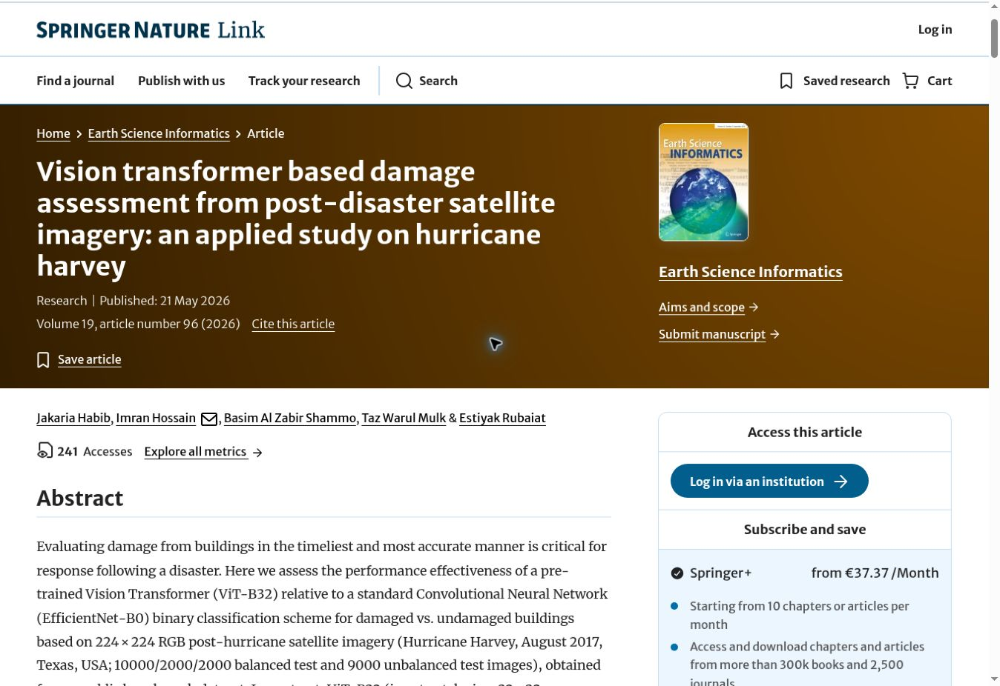

Vision Transformer-based Damage Assessment from Post-Disaster Satellite Imagery: An Applied Study on Hurricane Harvey
We used satellite images to study building damage after Hurricane Harvey.
A model called ViT-B/32 reached 97.85% accuracy in our tests.
It performed better than the CNN model used for comparison.
Heatmaps showed which parts of each image influenced the result.
Earth Science Informatics · Springer Nature · 2026 · Journal